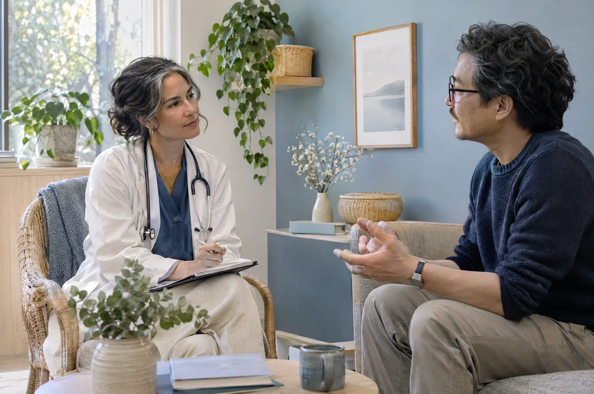

Спина и поясница · 2 мин чтения
Грыжа диска в заключении МРТ: что это меняет
Как сопоставляют описание диска с симптомами и почему размеры на снимке не определяют план сами по себе.
18 ноября 2026 · Редакционный разбор

Заключение МРТ описывает анатомию. Чтобы понять значение грыжи диска, врач сопоставляет снимки с жалобами, осмотром и изменениями силы или чувствительности.
В этой статье
Что называют грыжей
Межпозвонковые диски находятся между позвонками. При грыже часть диска выпячивается за привычные границы. Симптомы могут появиться, если изменения затрагивают нервные структуры.
При этом изменения диска не всегда вызывают боль. Важно, на каком уровне они обнаружены и соответствует ли это области симптомов. По одному миллиметру из заключения нельзя предсказать самочувствие или необходимость операции.
Что обсуждают на осмотре
Врач оценивает силу, чувствительность, рефлексы и характер распространения боли. На приём стоит взять сами изображения вместе с текстом заключения, сведения о начале эпизода и динамике симптомов.
Если вас беспокоит слабость, описывайте её через наблюдаемое изменение функции: стало труднее поднять стопу, удержать предмет или пройти привычное расстояние. Такая конкретика помогает отличить боль при движении от снижения мышечной силы.
Как выбирают дальнейшие шаги
Операция требуется не при каждой грыже. План может включать наблюдение, коррекцию активности, восстановительные занятия и лекарства, подобранные врачом. При сохраняющихся симптомах и выраженных неврологических изменениях обсуждают специалиста по позвоночнику.
Если рассматривают хирургическое лечение ишиаса, NICE рекомендует учитывать соответствие данных визуализации симптомам и результатам консервативной помощи. Это клиническое решение, которое не следует принимать только по формулировке МРТ.
Как оценивать результат помощи
Полезно заранее выбрать практические ориентиры: как долго удаётся сидеть, насколько свободна ходьба, как изменился сон. Сравнивайте эти показатели вместе с симптомами и рекомендациями специалиста.
Повторное исследование должно отвечать новому клиническому вопросу. Отдельно обсудите, когда нужно повторно показаться врачу и какие изменения требуют более раннего обращения.
Вопросы к специалисту
- Какая находка соответствует моим симптомам?
- Есть ли изменения силы или рефлексов?
- Что станет основанием поменять лечение или обсудить хирурга?
Источники
Официальные материалы и первичные публикации, использованные в разборе. Проверены при подготовке 18 ноября 2026 года.
Материал помогает ориентироваться в теме и готовить вопросы. Индивидуальные решения об обследованиях, лечении и использовании оборудования принимают с медицинским специалистом.
Связанные вопросы
 Спина и поясница
Спина и поясницаБоль из поясницы в ногу: что такое ишиас
Чем отличается боль по ходу нерва, что фиксировать и какие симптомы требуют срочной оценки.
Когда при боли в спине нужна МРТ
Какие вопросы решает исследование и почему его назначают с учётом осмотра.
 Движение и быт
Движение и бытКак возвращать движение после боли в спине
Посильная нагрузка, постепенность и вопросы к специалисту вместо универсального комплекса упражнений.